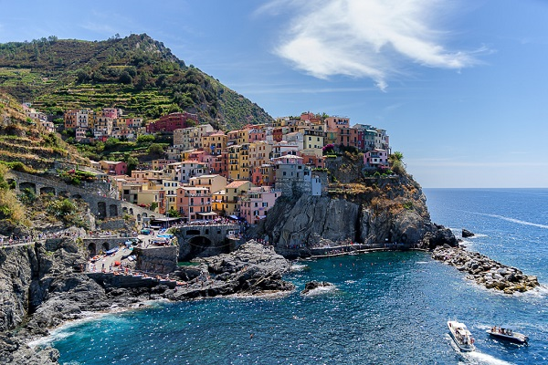

Mountains and Sea is considered an important precursor to color field painting and has been described as, "the Rosetta stone of color-field." The canvas's impact on the color field movement has been compared to the importance of Claude Monet's Impression, Sunrise to the Impressionist movement.

Every forest is a complex living system made up of thickly growing trees, bushes, vines, fungi, and other plants. Forests are also the homes of mammals, birds, insects, and many other animals.

The otherworldly aurora borealis, or northern lights, begin high in the Earth’s atmosphere—at altitudes from 60 to more than 250 miles—when charged particles from the sun become trapped in the Earth's magnetic field. The result is a colorful, dancing light show.

mountain, landform that rises prominently above its surroundings, generally exhibiting steep slopes, a relatively confined summit area, and considerable local relief.
Clickable Dropdown
Click on the button to open the dropdown menu.